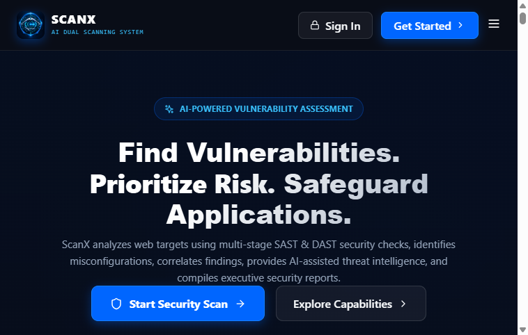
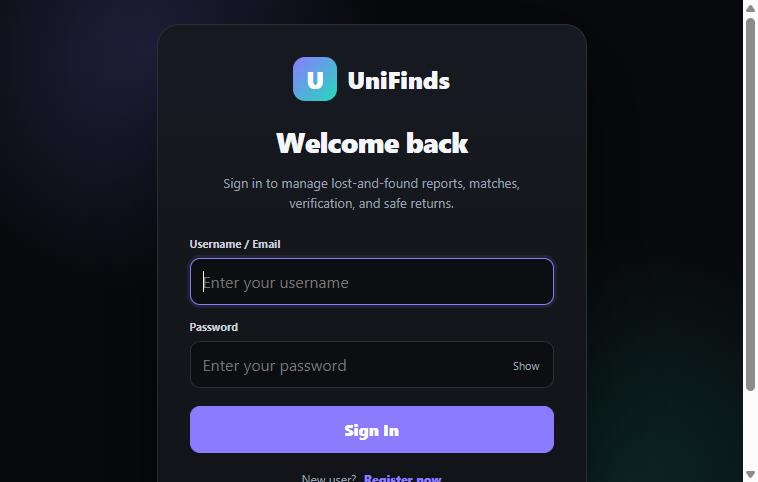

Programming Languages
Python
Java
SQL
Loading portfolio...
Cybersecurity • Web Development • UI/UX Design • Java Development
Hi, I'm
Computer Science Engineering student specializing in Cybersecurity and IoT, passionate about secure software development, modern web technologies, and intuitive user experiences.
Specializing in SOC operations, vulnerability assessments, penetration testing, and secure code practices.
About Me
I am a Computer Science Engineering student with a specialization in Cybersecurity and IoT. My interests lie in both offensive and defensive security, especially in SOC operations, vulnerability assessment, penetration testing, and network security.
I value continuous learning and enjoy building a strong foundation through hands-on projects, security analysis, and real-world exposure to network and system security concepts.
Technical Skills
Featured Projects
Autonomous security tools and intelligent full-stack applications built with end-to-end architectures, verified algorithms, and production-tested codebases.

An autonomous AI-assisted vulnerability assessment system designed to identify potential security weaknesses, validate threats through dual-AI consensus, and help users understand and prioritize findings.

An intelligent lost-and-found application designed to help users report lost or found belongings, match items using multi-modal AI embeddings, and verify ownership before safe return.
Security Labs & Assessments
Internship
Gained early exposure to network operations and troubleshooting in a professional environment, building confidence in practical networking tasks and structured problem solving.
Certifications
Participation in a focused learning program that strengthened foundational security understanding.
Details can be added from your resume to keep the portfolio recruiter-ready and current.
Research Publication
The Smart Door Access System publication highlights the role of connected technology in access control and the importance of security-aware design.
Achievements
Participated in a specialized learning experience focused on building cybersecurity confidence and awareness.
Engaged in capture-the-flag style challenges to strengthen problem-solving and security awareness.
Contributed to a collaborative innovation environment focused on practical technical problem solving.
Supported initiatives that promoted learning, teamwork, and community engagement.
Education
Computer Science Engineering (IoT & Cyber Security with Blockchain)
T John Institute of Technology
2023 – 2027 (Expected)Sudarshan Vidya Mandir
Completed • 2022Loyola Higher and primary School
Completed • 2020Contact
I'm actively seeking opportunities in Java Development, Full-Stack Web Development, and Cybersecurity. Whether it's a full-time role, internship, or collaboration, I'd be happy to connect and discuss how I can contribute.